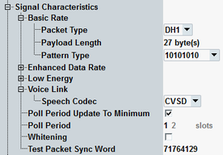

This section describes the parameters of the "Signal Characteristics" branch of the config tree.

Typically, remote commands ...:BRATe are used for BR physical layer (PHY), ...:EDRate for EDR PHY, ...:LE1M for LE 1M PHY, ...:LE2M for LE 2M PHY, and ...:LRANge for LE coded PHY.
Defines Bluetooth packet type used by connection links. The supported packet types are listed in "Bluetooth Signal Characteristics".
Option R&S CMW-KS610 is required for BR/EDR.
Remote command:Defines the length of RF test sequence.
Option R&S CMW-KS610 is required for BR/EDR.
Option R&S CMW-KS611 is required for LE 1M PHY. Option R&S CMW-KS721 is also required for LE 2M PHY and LE coded PHY.
Selects pattern for RF tests.
Option R&S CMW-KS610 is required for BR/EDR.
Option R&S CMW-KS611 is required for LE 1M PHY. Option R&S CMW-KS721 is also required for LE 2M PHY and LE coded PHY.
Specifies the voice codec to be used for synchronous connection-oriented audio connections. This setting selects automatically also the type of data link:
If the CVSD, A-law, or μ-law coding is selected, the SCO connection is used.
If the mSBC codec is selected, the eSCO connection is used.
Note that A2DP connections use ACL links.
Option R&S CMW-KS602 is required.
Remote command:The poll interval for TX test. The manual setting of poll period is irrelevant if automatic minimum period is used. The automatic minimum period sets the used poll period depending on the packet type. See also "TX Test Mode (BR/EDR)".
Option R&S CMW-KS610 is required.
This parameter is not applicable to LE.
Remote command:Enables/disables whitening in loopback mode. Whitening sequence sample is defined in Bluetooth core specification volume 2, part G.
Option R&S CMW-KS610 is required.
This parameter is not applicable to LE.
Remote command:Defines 4-byte synchronization word for direct test mode as hexadecimal number.
Option R&S CMW-KS611 is required.
Remote command: